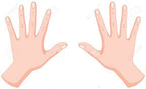

MI MUSICA, CANTANTES Y ARTISTAS
MI MUSICA, CANTANTES Y ARTISTAS FAVORITOS


 Regresar al currículum
Regresar al currículum| Cantantes Famosos | Noticias | Peliculas | ||
|---|---|---|---|---|
|
Enrique Iglesias ha conquistado buena parte del mercado latino, americano, europeo y asiático, es un habitual ganador de premios Grammy.Nació en Madrid en 1975, es hijo del destcado cantante español Julio Iglesias. En 1996, lanzó su primer ´lbum en español y desde entonces tiene muchisimos sencillos la mayoría de las cuales son éxitos. Álbumes-Escape 2002, Quizás, Seven 2003, etc. Canciones: Enamorado por primera vez, Mentirosa, Si tu te vas, Bailamos, etc. | |||
| Shakira nació en 1997 en Colombia. En árabe Shakira significa "mujer llena de gracia", y para los hindúes significa "diosa de la luz". Dio sus primeros pasos en el mundo del espectáculo a los 5 años de edad. Siendo todavía adolescente, firmó su primer contrato con Sony Music Colombia y desde este momento no ha parado de asombrarnos con sus canciones. Tiene varias nominaciones Grammy. Álbumes: Pies Descalzos, ¿Dónde están los ladrones?, Laundry Service, Fijación Oral Vol. 1 y 2. Algunos de sus éxitos son: Estoy aquí, Un poco de amor, Si te vas, Donde estas corazón, Donde están los Ladrones, Ciega, Sordomuda, Tú, etc. | |
|||
| Paulina Susana Rubio Dosamantes nació en 1971 en la Ciudad de México es una cantante y actriz mexicana. Su música es conocida en Ibero América y también tiene seguidores en los Estados Unidos, Europa, Asia, y Oceanía. Ha vendido más de 17 millones de álbumes alrededor del mundo hispano. Sus últimos éxitos son los sencillos Mio, Amor de mujer, Enamorada, El me engaño, Sangre Latina, Miel y Sal, Vuelve junto a mi, Sólo por ti, Bésame en la boca, Tú y Yo, Te daría mi vida y muchos otros. Aparte de cantante es y actriz, tiene papeles en varias telenovelas | ||||
| Ricky Martin nació en 1971. En 1984 entró en el grupo 'Menudo', con quienes viaj&poacute por toda Sudamérica recabando grandes éxitos. En 1990 se fue a México, para trabajar en una obra de teatro con la que obtuvo un notable triunfo. El estrellato lo alcanzó a raíz de su intervención en la serie 'Alcanzar una estrella'. A partir de ahi le empezaron a llover las ofertas. Tuvo conciertos con gran éxito en toda la América y en Europa. Ha editado varios discos que cuentan con el apoyo del público. La carrera de éxitos de este joven atrevido continúa sin cesar y seguro que pronto nos sorprende con algo nuevo. En 1999 ganó Grammy. Álbumes-The best of Ricky Martin, Almas del silencio 2003, Life 2005, etc. Algunos de sus éxitos son: Livin la Vida Loca, Vuelve, Shake your Bon-Bon, La Bomba, Hagamos el amor, La copa de la vida, etc. | Regresar al currículum |
|||